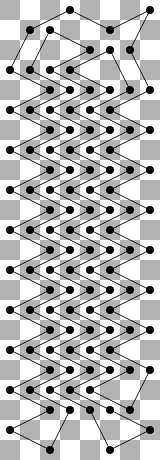
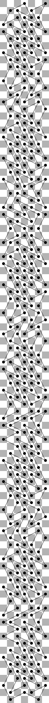

ACM ICPC World Finals 2018
Shortest judge solution: “1105” bytes. Shortest team solution (during contest): N/A bytes.
This was the hardest problem in this set, and it was actually an open problem in mathematics; with people not knowing the optimal tour lengths for some of the chessboard sizes for which we posed this problem.
The first observation is that if the limits for n were smaller (like, 50), we could attack this with a DP. The reason is that in order to extend a partial tour that is constructed up to some row, we don’t need the full information on what happened previous to that row. The full state required to extend the tour, for a given row, is the following state:
In theory, this representation means that we hold one of three possible values for each of the 8 squares in a row, and each of the three possible values for each of the 7 spaces between squares, and additionally we have to connect up to 14 elements into pairs (which can be done in 13!! = 135135 different ways), amounting to over 1012 states. However, in practice, most of these states are unreachable, and a program starting from the empty row will reach several hundred thousand states.
Representing the connectivity information in this state is a bit tricky, because we want to canonicalize it (that is, we want to make sure that we have only one valid representation for a given connectivity).
For any such state, we can then calculate what are the possible states in the next row, and how many visited squares do we add in such a transition. This can be done by a recursive algorithm, where for each line between squares we just add a visited square in the next row, for each visited square with one incoming edge we branch out into the four options for the other edge from this square, and for each empty square we branch out into seven options – either it is really empty, or we visit it with both edges going downwards. We need to do this carefully to make sure the edges we add do not intersect, and that we maintain the connectivity information correctly.
There are many technical details in the implementation of this algorithm (for instance, one has to distinguish the “empty row” state of “we have not started yet, there were no visited squares” from “we have already finished the tour”, in order not to allow multiple disconnected tours as a solution). With an efficient implementation, an 8 by 50 chessboard can be solved in several seconds, and an unoptimized program will perhaps run for several minutes.
Now, the crucial observation is that the solutions actually start getting repetitive after a while. For instance, for board size 8 by n, after a while you get a pattern of 6 knights in a row all jumping left, and then all jumping right, adding 12 visited squares with each two added rows, as in the picture below.

This suggests that we should try to run the DP described above for a reasonable range of n, and look for this cyclic behaviour – that adding some k rows to n increases the answer by some a. And indeed – after running up to, say, n ≤ 200, we will discover cycles for all possible values of m. Thus we can precompute these values locally and then submit a simple solution which has them hard-coded.
We found it interesting that for m = 7 one finds a somewhat surprising cycle length of 33 – there is a pattern of size 7 × 33 that can be repeated over and over in the solution. See, for instance, this diagram:
